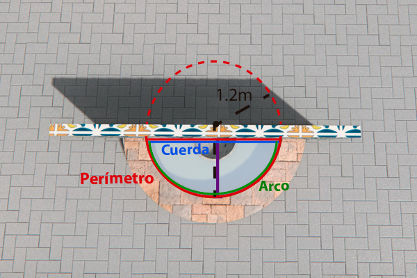

Reflexiones y aplicaciones
En la página anterior vimos una aplicación de las razones trigonométricas para resolver problemas. Ahora bien, en geometría se utilizan otras muchas herramientas, como lo pudiste observar en esta unidad, donde mapeamos nuestro problema a formas y figuras geométricas que nos permitieron atacar el problema con la información de la que disponíamos.
Como lo señalamos anteriormente, el reto está en reconocer en el planteamiento de un problema los elementos que te permiten resolverlo, y mediante qué estrategia. El procedimiento para resolver un problema de índole geométrica se puede resumir en los siguientes pasos:
- Leer el problema repetitas veces hasta haberlo comprendido cabalmente.
- Elaborar una representación esquemática del problema.
- Identificar en el esquema la incógnita y los datos relevantes.
- Elegir la estrategia que permite resolver el problema, es decir: identificar las composiciones y figuras geométricas que permitirán llegar a la solución.
- Escribir las fórmulas correspondientes, sustituir en ellas las variables por los datos conocidos y hacer los cálculos requeridos.
- Corroborar la(s) respuesta(s) obtenida(s).
El objetivo de esta página es que resuelvas el siguiente problema, poniendo en práctica la metodología descrita anteriormente.
Problema
Se tiene una fuente de agua de forma semicircular saliendo de una pared.
El radio del círculo es de 1.2 metros.
Sin embargo, la distancia de la pared al punto más alejado de la pileta (tina) de la fuente es de solo 1m; es decir, el semicírculo no está completo.
Además, la pileta tiene una profundidad de 50 centímetros.
Se quiere cambiar los mosaicos cerámicos que recubren la parte interior de la pileta.
¿Cuántos metros cuadrados de mosaicos se requieren?
Tarea
Trata de resolver el problema descrito. Para ello, elabora un dibujo de la fuente y ubica en él cada una de las medidas proporcionadas. Hazte las siguientes preguntas:
- ¿Cuáles son las áreas que tendré que calcular para obtener el área total del interior de la pileta?
- ¿Cómo podré calcular cada una de estas áreas?
- ¿Qué operación debo realizar al final para obtener el área total a partir de las áreas calculadas?
¡Ojo! Para poder resolver el problema, no sólo necesitarás recordar lo que se vio en esta unidad; también tendrás que echar mano de otros conocimientos previos. También asegúrate de que tu calculadora haga los cálculos en radianes.
¡Intenta encontrar la respuesta por tu cuenta antes de ver la solución! Y recuerda: si no sabes, siempre está la posibilidad de investigar...
Solución de la tarea
Observa los siguientes dibujos representativos del problema:
Resumamos los datos con que contamos para resolver el problema:
| El radio \(r\) | \(r = 1.2 \text{m}\) |
| La distancia de la pared al extremo del círculo (equivalente a \(h_{vacío}\)) | \(h_{vacío} = 1 \text{m}\) |
| La profundidad de la pileta | \(P = 0.5 \text{m}\) |
Estrategia
Seguramente notaste que el área a cubrir con mosaicos es la suma del área del fondo y de las paredes de la pileta.
La pileta tiene la forma de un segmento circular, así que ya sabemos cómo calcular el área del fondo de la pileta.
Para calcular el área de las paredes, necesitamos conocer el perímetro del segmento circular.
Éste, a su vez, equivale a la suma de la longitud del arco más la longitud de la cuerda que delimitan el segmento circular.
Finalmente, para obtener el área de las paredes, tendremos que multiplicar el perímetro obtenido por la altura de la pared.
-
Empecemos por calcular el área del segmento circular que equivale al fondo de la pileta.
- Calculamos el ángulo que lo define: $$ \begin{align} \alpha &= 2 × arccos \left(1-\frac{1}{1.2}\right) \\ &= 2 × arccos (0.1667) \\ &= 2.8 rad \\ \end{align} $$
- Conociendo el ángulo, calculamos el área del segmento circular : $$ \begin{align} \text{Área seg. circular} &= \left(\frac{1.2^2}{2}\right) × ( 2.8 - sen (2.8)) \\ &= 0.72 × (2.8 - 0.334) \\ &= 1.775 m^2 \\ \end{align} $$
-
Calculemos ahora el perímetro de la pileta, el cual como ya dijimos está compuesto por el arco y por la cuerda que delimitan el segmento circular.

- Si recuerdas, el perímetro de una circunferencia equivale a \(2\pi r\), donde \(r\) es el radio de la circunferencia y \(2\pi\) es el valor en radianes del ángulo (de 360º) de la circunferencia. Entonces, por analogía, sabemos que la longitud del arco de nuestro segmento circular se calcula como \( r × \alpha \), donde \( \alpha \) es el ángulo que ya calculamos. $$ \begin{align} \text{Arco} &= r × \alpha \\ &= 1.2 × 2.8 \\ &= 3.36 m \\ \end{align} $$
- Por otro lado, la cuerda se puede obtener a partir de uno de los lados del triángulo que usamos para definir la fórmula para \( \alpha \); de hecho, es el doble de ese lado. Recuerda también que \( \alpha \) es el doble del ángulo \(\theta\) del triángulo rectángulo, de modo que \( \theta = \frac{\alpha}{2} \). De páginas anteriores, sabemos que el lado del triángulo tiene longitud \( r × sen (\frac{\alpha}{2}) \). Entonces: $$ \begin{align} \text{Cuerda} &= 2 × (r × sen (\frac{\alpha}{2}) ) \\ &= 2 × (1.2 × sen(1.4) )\\ &= 2 × (1.2 × 0.985)\\ &= 2.364 m \\ \end{align} $$
- Entonces el perímetro completo del segmento circular es: $$ \begin{align} \text{Perímetro} &= \text{Arco} + \text{Cuerda} \\ &= 3.36 m + 2.364 m \\ &= 5.724m \\ \end{align} $$
- Ahora multiplicamos el perímetro obtenido por la profundidad de la pileta y tenemos el área de la pared: $$ \begin{align} \text{Área pared} &= \text{Perímetro} × \text{Profundidad} \\ &= 5.724 m × 0.5 m \\ &= 2.862 m^2 \\ \end{align} $$
- Y para finalizar sólo sumamos las dos áreas: $$ \begin{align} \text{Área total} &= \text{Área pared} + \text{Área segmento circular}\\ &= 2.862 m^2 + 1.775 m^2 \\ &= 4.637 m^2 \\ \end{align} $$
Por último, conviene corroborar si las medidas obtenidas son correctas. Más que corroborarlas numéricamente, hagamos un breve ejercicio de validación de nuestras medidas a través de su comparación con algunos otros datos conocidos. En específico:
- Primero, comparemos el valor del área del segmento circular (\(1.775 m^2\)) con el área del círculo completo (\(\pi r^2 = 4.52 m^2\) ). ¿Te parece factible que el área obtenida para el segmento sea ésa?
- Luego, validemos la longitud del arco (\(3.36 m\)) en función del perímetro completo del círculo (\( 2 \pi r = 7.539 m \)). ¿Te suena lógico?
- Por último, ¿la cuerda puede tener una longitud de \(2.364 m\), cuando el diámetro del círculo es de \(2.4 m\)?
¡Parece que los datos verificados tienen sentido en el contexto de las medidas proporcionadas en el plantamiento del problema! Por lo mismo, asumimos que son correctos.